A fast library for increasing the number of training images by applying various transformations.
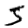 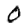 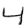 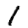 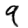  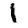 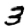 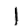 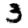 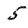 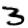 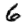 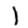 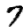 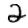 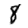 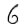 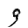
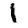 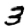 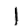 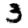 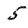 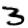 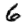 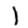 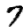 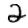 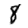 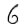 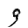
Augmentor.jl's documentation
Augmentor is a real-time image augmentation library designed to render the process of artificial dataset enlargement more convenient, less error prone, and easier to reproduce. It offers the user the ability to build a stochastic augmentation pipeline using simple building blocks. In other words, a stochastic augmentation pipeline is simply a sequence of operations for which the parameters can (but need not) be random variables as the following code snippet demonstrates.
julia> using Augmentor
julia> pipeline = Rotate([-5, -3, 0, 3, 5]) |> CropSize(64, 64) |> Zoom(1:0.1:1.2)
3-step Augmentor.ImmutablePipeline:
1.) Rotate by θ ∈ [-5, -3, 0, 3, 5] degree
2.) Crop a 64×64 window around the center
3.) Zoom by I ∈ {1.0×1.0, 1.1×1.1, 1.2×1.2}The Julia version of Augmentor is engineered specifically for high performance applications. It makes use of multiple heuristics to generate efficient tailor-made code for the concrete user-specified augmentation pipeline. In particular Augmentor tries to avoid the need for any intermediate images, but instead aims to compute the output image directly from the input in one single pass.
Where to begin?
If this is the first time you consider using Augmentor.jl for your machine learning related experiments or packages, make sure to check out the "Getting Started" section. There we list the installation instructions and some simple hello world examples.
Augmentor.jl is the Julia package for Augmentor. You can find the Python version here.
Introduction and Motivation
If you are new to image augmentation in general, or are simply interested in some background information, feel free to take a look at the following sections. There we discuss the concepts involved and outline the most important terms and definitions.
In case you have not worked with image data in Julia before, feel free to browse the following documents for a crash course on how image data is represented in the Julia language, as well as how to visualize it.
User's Guide
Augmentor provides a number of already implemented functionality. The following section provides a complete list of all the exported operations and their documentation.
Tutorials
Indices and tables
Augmentor.CacheImageAugmentor.CombineChannelsAugmentor.ConvertEltypeAugmentor.CropAugmentor.CropNativeAugmentor.CropRatioAugmentor.CropSizeAugmentor.EitherAugmentor.ElasticDistortionAugmentor.FlipXAugmentor.FlipYAugmentor.NoOpAugmentor.PermuteDimsAugmentor.RCropRatioAugmentor.ReshapeAugmentor.ResizeAugmentor.RotateAugmentor.Rotate180Augmentor.Rotate270Augmentor.Rotate90Augmentor.ScaleAugmentor.ShearXAugmentor.ShearYAugmentor.SplitChannelsAugmentor.Zoom